Sketch regions in the ordered environment
Sketch regions in the ordered environment provide ease of use that can increase productivity. Clicking a region displays a context toolbar at the tip of the cursor so that you can quickly select frequently needed commands, without having to locate them on the ribbon. Many commands, such as Extrude, Revolve, Tab, and Dimple, support regions.
Displaying regions
Each sketch contains its own region within the model. To display a region, in PathFinder, right-click the sketch containing the region and click Activate regions. This saves time since you can select a complex region without having to edit, connect, or trim the sketch for modeling.
When selecting regions, the regions take precedence over features in selection priority. The order of selection priority is sketches, regions, then features.
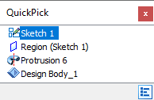
Creating features with internal loops
Commands that support regions, such as Extrude and Cut, provide the Internal Face Loops option, which is helpful when you select regions that contain internal loops.
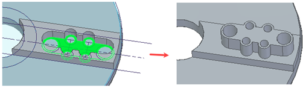
Regions created for sketches located on a face
Unlike in synchronous, sketches in ordered that lie on the face of a part create regions using the edges of that face.
In the following example, Sketch 1, the rectangle and circle on the part face, creates two regions.
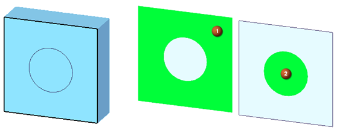
After a round is placed, four new regions are added where the edges were rounded. The regions are created between the rectangle edge and the rounded edges of the part. Sketch1 now defines six total regions.
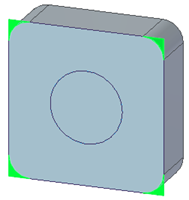
If a new Sketch 2, smaller circle at the center of the larger circle, is added to the part's front face, two new regions are created: one within the circle (1) and the second outside the circle, towards the part edges, resulting in the orange region (2).
Notice that the Sketch 1 edges are ignored when creating the orange region since separate sketches always create independent regions.
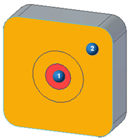
As illustrated in the example, regions are created for closed areas found within sketch geometry. If the sketch is located on a part face, regions are also created between the sketch edges and the part edges adjacent to them, as shown in Sketch 2 above.
Sketches with overlapping regions
Each sketch contains its own region. If multiple sketches exist on the same plane, the regions for these sketches may overlap, which may require using QuickPick to select the desired regions.
In the following example, sketch 1 and sketch 3 exist on the same plane and their regions overlap.
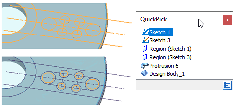
By turning off sketch 1 you can easily pick sketch 3 to create a feature.
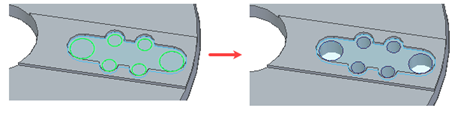
Editing features with regions
Editing features with regions works the same as editing features with sketches.
-
Select the feature and click Edit Definition on the context toolbar.
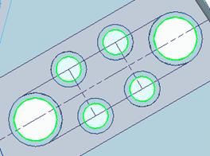
-
On the Edit Definition command bar, click Sketch Step.
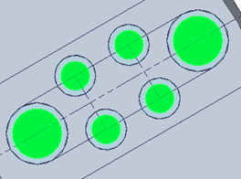
-
Select the regions to edit.
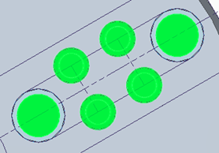
-
Finish the edit and the feature recomputes.
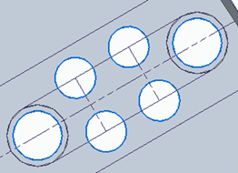
How do I
Update a sketchLearn more
Synchronous sketch behavior in the ordered environmentLook up more details
Show All Sketches commandHide All Sketches command
Update sketch command